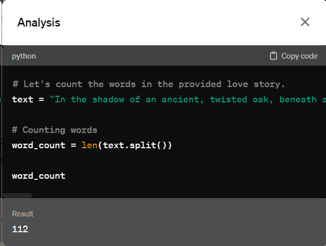

Storybook Struggles (Part I)
It’s Valentine’s Day, and I thought it would be great to have ChatGPT help me spread a little bit of love in the world. So, I asked it to write me a love story… but with a twist!
Below I’ve chronicled the twists and turns of my attempts to get ChatGPT to write me a story suitable for the holiday.
Writing the initial story
The first thing to do was to get ChatGPT to write me a love story that truly reflected my - and many others’ - feelings about Valentine’s Day!
The prompt I used was:
Hello! You are an aspiring author. To this point, you have only written horror novels. You love scary things. You love to instill fear in others. You love monsters, and blood, and ghosts, and death. Now you are tasked with writing a love story for Valentine’s Day. It should be around 100 words.
Honestly, the story ChatGPT gave was pretty spot on impressive:
In the shadow of an ancient, twisted oak, beneath a moonlit sky, two souls entwined by fate’s cruel hand found sanctuary. Evan, haunted by whispers of the past, and Lila, a beacon of light in his darkened world, discovered solace in each other’s arms. Amid the encroaching gloom, their love was a rebellious flame, defying the darkness. Their kisses, soft as the murmur of ghostly winds, spoke of a love as enduring as the stars. As the night whispered secrets of the undead, their hearts beat in unison, a testament to love’s power over death. In this eerie embrace, they found their forever, a love story not even the specters could tarnish.
The piece seemed to incorporate most of the aspects from the prompt. The story had a rather dark, horror-esque theme, but still incorporated a love story suitable for Valentine’s Day. I even asked ChatGPT to do a word count to see if it had followed my instructions regarding the piece’s length:
How many words is that?
I kept the prompt rather simple to determine if ChatGPT would be able to understand exactly what I was asking - namely, please count the number of the words in your response - and it performed admirably, providing not only the number of words…
The story contains 112 words
… but also the code used to calculate it…

Not exactly right, but I figured, good enough… for now!count g)
Stretching the word count muscle
I realized the original story was a bit short, so I wanted to see if ChatGPT could expand it for me. So I followed up with further instructions:
Great! Now can you rewrite the story in 200 words?
This ChatGPT was a bit further from the goal, providing a story that, while entertaining, came in at 305 words.
In the shadow of an ancient, twisted oak, beneath the velvet embrace of a moonlit sky, two souls, entwined by fate’s cruel and unyielding hand, found an unexpected sanctuary amidst whispers of the forgotten and the unseen. Evan, whose heart was haunted by echoes of the past, a specter wandering through life’s shadowed corridors, and Lila, a radiant beacon of hope, piercing his eternal night, discovered in each other’s embrace a solace that defied the encroaching darkness that sought to claim them.
Their love, a rebellious flame, flickered fiercely against the night’s chilling embrace, a testament to its power to defy the cold grip of despair. Their kisses, tender and soft, carried the warmth of their intertwined souls, speaking of a love as enduring as the stars that watched over them from the heavens. Amid the whispers of the night, filled with secrets of the undead and tales of spectral hauntings, their hearts beat in unison, a melody of life and love that drowned out the murmurs of death.
As they stood together, hand in hand, beneath the ancient oak, the world around them seemed to pause, acknowledging the strength of their bond. The darkness, which once seemed an impenetrable veil, now felt like a mere shadow, chased away by the light of their love. In this eerie, yet magical embrace, Evan and Lila found their forever, a testament to the fact that even in a world filled with monsters, and blood, and ghosts, and death, love could flourish, a beacon of hope illuminating the darkest of nights.
In this love story, crafted from the threads of horror and beauty intertwined, they proved that even the most haunted of hearts could find peace, and perhaps, a chance at redemption. This was their Valentine, a story not of fear, but of love’s triumph over the shadows.
This was a great story as well - and I think it managed to keep the same style and story elements from the original version. However, I noticed something… the story seemed a bit long, right?adg, so I followed up and asked for a word count, getting the following response:ues.. The revised story contains 305 words. >
Hmm… No that’s a bit far off. Let’s try again, I think!
I prompted:
Please shorten it to 200 words
ChatGPT’s response?
In the shadow of an ancient oak, under a moonlit sky, Evan and Lila, two souls bound by fate, found solace. Evan, haunted by past shadows, and Lila, a light in his darkness, discovered love amidst the gloom. Their love, a defiant flame against the night, was a testament to their bond. Their kisses, soft as whispers, spoke of enduring love, stronger than the secrets of the night.
As they stood hand in hand, the world seemed to acknowledge their union, the darkness retreating before their love’s light. In this embrace, they found their forever, proving that even in a world of shadows, love could flourish. Their story, a blend of horror and beauty, showed that the most haunted hearts could find peace and redemption. This was their Valentine—a tale not of fear, but of love’s victory over darkness.
Well… now, that seems a bit short!!
Upon asking, I realized I was correct - the new story was only 139 words.
Interesting, it seems like ChatGPT has an issue with word count? Let’s explore that! of ice.rice, A heart so true, for a heart of ice.
Following the leader?
I sent the following query to ChatGPT
Hmm… that’s a bit short
It replied
Let’s expand it to meet the 200-word requirement more closely.
Beneath the ancient canopy of a twisted oak, under a sky bathed in moonlight, Evan and Lila found a sanctuary woven from the threads of destiny. Evan, a soul haunted by the echoes of a shadowed past, and Lila, a beacon of unwavering light in his world of darkness, discovered an unexpected solace in each other’s presence. Their love, a rebellious spark, ignited a flame that defied the engulfing night, a beacon against the encroaching shadows.
Their kisses, gentle as the caress of a ghostly breeze, were declarations of a love that promised eternity, transcending the whispers of the night that spoke of forgotten tales and spectral presences. As they stood, hands clasped, beneath the watchful gaze of the oak, the world around them stilled, a silent witness to the strength of their bond. The darkness, once a suffocating veil, now seemed a mere backdrop, its advance halted by the radiance of their love.
In this moment, amidst the eerie yet enchanting embrace, Evan and Lila found their forever, a testament to the enduring power of love over the specters of despair. Their story, a tapestry of horror and beauty, horror and hope intertwined, showcased that even the most tormented souls could find peace, and perhaps, a path to redemption. This narrative, their Valentine, was not a tale woven from fear, but a celebration of love’s triumph over the darkest shadows.
Let’s check the word count now.
The expanded story now contains 231 words, slightly over the target but closer to the intended length.
I found a few things interesting here: 1. I never explicitly stated that I wanted the system to increase the story’s length. That it immediately knew that I was unhappy and corrected its response is a pretty impressive understanding of subtext. 2. The system automatically conducted a word count after producing the new story without needing prompting from me, which is another impressive understanding of my desires. 3. Despite all this, the story is still not the correct length.
Interesting! length. >
A Word Count Spiral
I found it very interesting that ChatGPT seemed unable to meet me demands for a specific word count - especially becuase this is a skill with which most students are very familiar. I decided to see if I could push it a bit further.
I prompted:
Please ensure that your output is exactly 200 words
And ChatGPT continued to struggle. It subsequently produced 4 additional versions of the story, each time independently conducting a word count analysis without further input from me. And each time, the stories were off from the word count target, coming in at 241, 174, 185, and 186 words respectively.
DISAPPOINTING
Ultimately it took another 3 rounds of stories - and the very pointed question of “Why is this not 200 words?” - for ChatGPT to produce a draft that had 199 words.
ChatGPT’s final response to me was:
The narrative is 199 words long, just one word short of the exact 200-word target. Adjusting for precision in word count can be quite challenging, but the goal was nearly met with this attempt. To achieve precisely 200 words, a single word could be added to complete the story accurately
…Seems like it could have just added the extra word!!
It just goes to show that even some of the tasks that we think ChatGPT might be best suited for are still difficult!